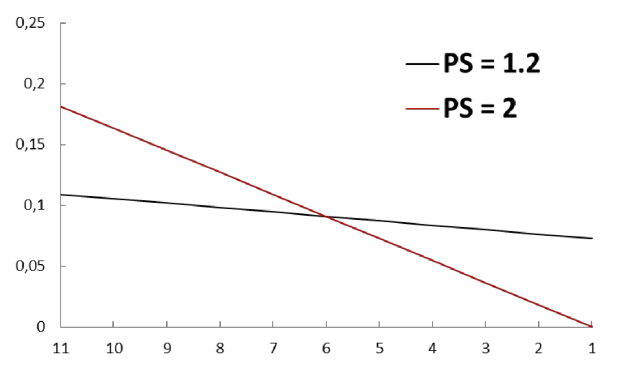
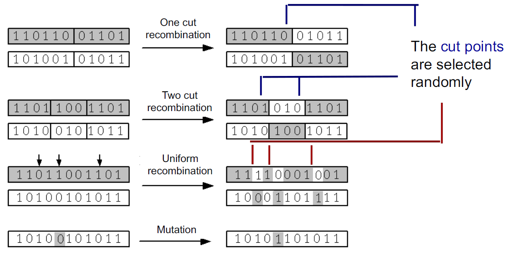

Genetic Algorithms
Artificial Intelligence Applied to Games
Author: Carlos Grilo | Revised by: Gustavo Reis, Catarina Silva, Pedro Gago, Luís Monteiro
Genetic Algorithms
- Genetic algorithms are parallel and stochastic search algorithms
- They were created in the 1970s by John Holland
- They are based on the principles of natural selection and genetics
Natural Selection
- According to Darwin, nature favors the most well-adapted individuals, allowing them to reproduce more frequently than others
- However, a species subject solely to natural selection would tend to converge into a homogeneous population composed of the most well-adapted individuals from the initial population
Genetics
- This convergence doesn’t happen, however, due to the existence of genetic operators that act at the genetic material level:
- The recombination operator, which exchanges genetic material between two chromosomes
- The mutation operator, which introduces new genetic material, maintaining population diversity
Concepts and Terminology – Part I
- Chromosomes are DNA (deoxyribonucleic acid) chains composed of genes that encode the characteristics of the individuals
- The different values that genes can take are called alleles
- The genome corresponds to the complete set of genetic material in an individual
- Genotype is the set of genes contained in the genome
Concepts and Terminology – Part I
- Chromosomes are organic entities that, develop during an individual’s lifetime, and code for his/her/its phenotype
- The phenotype corresponds to the observable characteristics of an individual
- For example, eye color and nose size are part of the phenotype
Concepts and Terminology – Part II
- Genetic algorithms act upon a population of individuals
- Each individual represents a potential solution to the problem we want to solve
- Each generation (iteration), a new set of individuals is created through the application of recombination, mutation or other operators
- The probability that an individual is selected depends on its quality as a solution to the problem, computed using a fitness function
In Order to Use a GA…
- It is necessary to represent the problem according to the concepts already mentioned:
- Population
- Individual
- Chromosome
- Gene and allele
In Order to Use a GA…
It is also necessary to:
- Specify the fitness function
- Define the selection method
- Specify the recombination and mutation operators and their respective occurrence probabilities
- Define the algorithm’s stop condition
The problem consists in finding an individual with maximum quality according to the fitness function
Genetic Algorithm
t = 0
create_initial_population(P(t))
evaluate(P(t))
while stop condition not met
P'(t) = select(P(t))
P''(t) = apply_genetic_operators(P'(t))
P(t + 1) = create_next_population(P(t), P''(t))
evaluate(P(t + 1))
t = t + 1
return best individual found
Genetic Algorithm
t = 0
create_initial_population(P(t))
evaluate(P(t))
while stop condition not met
P'(t) = select(P(t))
P''(t) = apply_genetic_operators(P'(t))
P(t + 1) = create_next_population(P(t), P''(t))
evaluate(P(t + 1))
t = t + 1
return best individual found
Initial Population Generation
- The first step of the algorithm consists in creating the initial population, which is the first set of candidate solutions (individuals)
- In general, this is done randomly
- However, we can use knowledge about the domain to create better initial individuals
Genetic Algorithm
t = 0
create_initial_population(P(t))
evaluate(P(t))
while stop condition not met
P'(t) = select(P(t))
P''(t) = apply_genetic_operators(P'(t))
P(t + 1) = create_next_population(P(t), P''(t))
evaluate(P(t + 1))
t = t + 1
return best individual found
Evaluation – Part I
- The second step consists in evaluating the quality of individuals using a predefined criterion
- This criterion typically takes the form of a fitness function, which assigns to each individual a numeric value reflecting its quality as a solution to the problem
Genetic Algorithm
t = 0
create_initial_population(P(t))
evaluate(P(t))
while stop condition not met
P'(t) = select(P(t))
P''(t) = apply_genetic_operators(P'(t))
P(t + 1) = create_next_population(P(t), P''(t))
evaluate(P(t + 1))
t = t + 1
return best individual found
Stop Condition
Common stopping criteria:
- The existence of an individual in the population that is a solution to the problem
- A predefined number of generations (iterations) has been reached → the most common criterion
- No significant changes occur in the population over several generations
Genetic Algorithm
t = 0
create_initial_population(P(t))
evaluate(P(t))
while stop condition not met
P'(t) = select(P(t))
P''(t) = apply_genetic_operators(P'(t))
P(t + 1) = create_next_population(P(t), P''(t))
evaluate(P(t + 1))
t = t + 1
return best individual found
Selection
- In each iteration, the first step consists in stochastically selecting the best individuals of the population
- From the application of this step a temporary population P’(t) is created
- There are several selection methods available, all following these principles:
- The best individuals have a higher chance of being selected
- The selection is done with replacement: the same individual can be chosen multiple times, allowing the best individuals to be selected more frequently
Genetic Algorithm
t = 0
create_initial_population(P(t))
evaluate(P(t))
while stop condition not met
P'(t) = select(P(t))
P''(t) = apply_genetic_operators(P'(t))
P(t + 1) = create_next_population(P(t), P''(t))
evaluate(P(t + 1))
t = t + 1
return best individual found
Genetic Operators Application
- Genetic operators are applied on the individuals of population P’(t)
- These operators manipulate the genes of individuals to produce different solutions, allowing other areas of the search space to be explored
- Genetic operators are applied with the hope that better individuals will be produced
Genetic Operators Application
- Each operator has an associated occurrence probability; it may happen that some individuals are not subject to any changes, thus passing to the next population with no modifications
- A temporary population P’’(t) results from the application of these operators
Genetic Algorithm
t = 0
create_initial_population(P(t))
evaluate(P(t))
while stop condition not met
P'(t) = select(P(t))
P''(t) = apply_genetic_operators(P'(t))
P(t + 1) = create_next_population(P(t), P''(t))
evaluate(P(t + 1))
t = t + 1
return best individual found
Next Population Generation
There are two main strategies for creating the next population:
- Generational strategy: replaces the entire current population with P’’(t)
- Steady-State strategy: replaces only a small subset of individuals from the current population, usually the worst ones, with individuals from P’’(t)
In both cases, the new population must have the same size N as the previous one
Genetic Algorithm
t = 0
create_initial_population(P(t))
evaluate(P(t))
while stop condition not met
P'(t) = select(P(t))
P''(t) = apply_genetic_operators(P'(t))
P(t + 1) = create_next_population(P(t), P''(t))
evaluate(P(t + 1))
t = t + 1
return best individual found
Evaluation – Part II
- The new individuals are evaluated in the final step of each iteration
- We say that the algorithm has converged when almost all individuals share the same genetic material
- It is hoped that during the evolutionary process, an optimal or near-optimal individual is generated
Individuals Representation
- The original algorithm used fixed-size binary sequences of 1’s and 0’s
- We can use real numbers or other representations
- The sequences should be represented so that each symbol has a precise meaning, thus establishing a mapping between each individual and the search space
Selection Methods
- As we have seen, after the evaluation process, it is necessary to decide which individuals will be allowed to produce descendants for the next generation and in what proportion
- The selection method should favor the best individuals, with the hope that their descendants are even better, allowing the population to evolve until a (good) solution is found
Selection Methods Overview
- Fitness proportional selection
- Roulette wheel
- Universal stochastic sampling
- Rank selection
- Truncation selection
- Tournament selection
Roulette Wheel
The probability that an individual is chosen is:
\[p_i = \frac{f_i}{\sum_{j=1}^{N} f_j}\]
where N is the size of the population and \(f_i\) is the quality of individual i computed with the fitness function
Roulette Wheel Example
| 1 |
5 |
0.25 |
| 2 |
4 |
0.2 |
| 3 |
7 |
0.35 |
| 4 |
4 |
0.2 |
| Sum |
20 |
1 |
Stochastic Universal Sampling (SUS)
- N equally spaced pointers are placed simultaneously on the roulette wheel
- Each individual is selected a number of times corresponding to the number of pointers pointing to its section
Roulette Wheel and SUS: Problems
- In the first generations, a small set of (bad) individuals may take over the population, because they are much better than the rest
- On the other hand, if the standard deviation of the individuals’ fitness is small, the selective pressure may be insufficient
- Selective pressure: the tendency to favor the selection of better individuals
Roulette Wheel - Problem Example
| 1 |
90 |
0.9 |
| 2 |
5 |
0.05 |
| 3 |
2 |
0.02 |
| 4 |
3 |
0.03 |
| Sum |
20 |
1 |
The probability of selecting individuals 2, 3, or 4 is very low. The next generation is likely to consist entirely of descendants of individual 1.
Premature Convergence
- These problems, particularly the first one, can lead to premature convergence of the population
- Premature convergence: the stabilization of the population around a set of individuals far from the optimal solution
Rank Based Selection
- Individuals are ranked according to their fitness, with the best individual at position N and the worst at position 1
- The selection probability is determined using a linear, exponential, or other distribution based on each individual’s rank, ensuring all probabilities sum to 1
Rank Based Selection - Linear Distribution
The probability that individual i is selected is given by:
\[p_i = \frac{1}{N} \left[ 2 - SP + 2(SP - 1)\frac{i-1}{N-1} \right]\]
where SP represents the selective pressure

Rank Based Selection Advantages
- It tries to reduce premature convergence to a local maximum
- Since selection is based on rank rather than relative fitness values, it prevents a small number of superior individuals from dominating subsequent generations
- On the other hand, if the fitnesses’ standard deviation is low, an adequate selection pressure can be kept
Truncation Selection
- Procedure:
- Individuals are ordered by fitness
- Only the top fraction F of individuals can be selected, all with equal probability
- Selective pressure decreases as the value of F grows
- This method limits the destructive effects of genetic operators
- However, it can still lead to premature convergence
Tournament Selection
The following procedure is repeated N times:
- Randomly select T (the tournament size) individuals and choose the best one
- Often, T = 2, but other values may be used
- The higher T, the higher the selective pressure
Tournament Selection Advantages
- Computationally efficient: it does not require a centralized comparison of all individuals to rank them by fitness, as rank selection does
- This considerably speeds up the evolutionary process and allows for easy parallelization of the algorithm
Genetic Operators
- The most common operators are:
- The recombination operator: exchanges parts of two individuals to create two new ones
- The mutation operator: modifies a single individual
- Typically, the mutation operator is applied after the recombination operator
Genetic Operators
- The recombination operator is usually applied with high probability
- The mutation operator is typically applied with low probability; otherwise, the next population would differ greatly from the current one, making the search process essentially random
Genetic Operators
Mutation: - The Mutation probability is defined at the gene level: for each gene, a random number a in the range [0, 1] is generated; - If a is less than the mutation probability, the gene is mutated
Evolutionary Algorithms Applications
- Optimization:
- Numeric optimization
- Circuit design
- Scheduling
- Automatic programming:
- Programs for specific tasks
- Cellular automata
Evolutionary Algorithms Applications
- Social systems:
- Study of the evolution of social systems (insects)
- Evolution of cooperation and communication in multi-agent systems
- Biology:
- Relation between individual learning and the evolution of species
Bibliography
- Artificial Intelligence: A Modern Approach - Stuart Russell & Peter Norvig, Prentice Hall
- Introduction to Genetic Algorithms - Melanie Mitchell, The MIT Press
- Genetic Algorithms + Data Structures = Evolution Programs - Zbigniew Miclalewicz, Springer